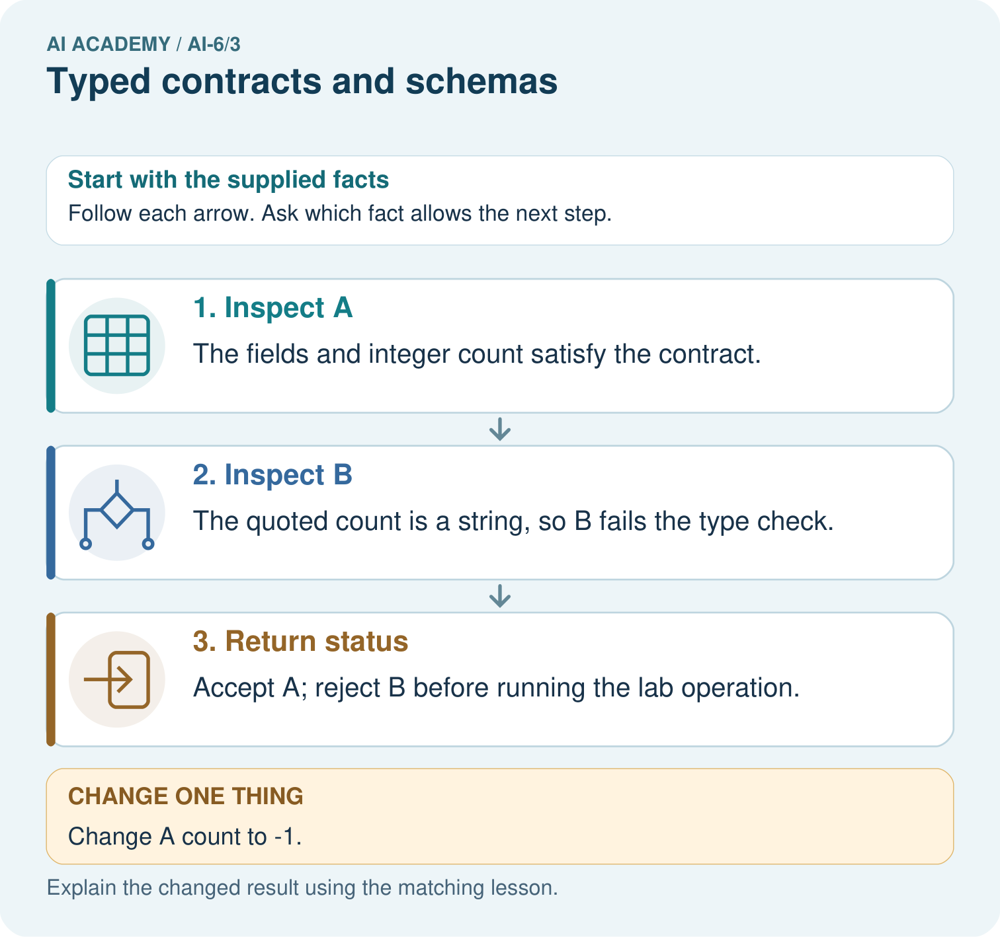

AI Academy · Level 6 · Grade 11 · Week 3 · Teacher guide
Typed contracts and schemas
Learn to understand, design, build, test and explain AI systems responsibly.
Project: Grounded Learning Service
Teacher guide · 1 of 6
Prepare the purpose, prerequisites and materials
Teach the learning cycle
Primary target: Explain the mechanism and terminology of typed contracts and schemas
| Session | Sequence and minutes | Resources |
|---|---|---|
| Session 1 · Understand · 45 min | 0–7: recall and prerequisite; 7–15: inspect the concrete case and predict; 15–30: teacher models the worked trace; 30–40: learners explain a step using the text and visual; 40–45: check the core idea. | Sections 1–6; record the brief recall in the workbook. |
| Session 2 · Practise · 45 min | 0–5: retrieve the procedure; 5–15: W2 completion practice; 15–23: explain and check with a partner; 23–30: each learner answers the misconception check; 30–40: targeted reteaching or a harder variation; 40–45: prepare the investigation. | Sections 7–10; use the matching workbook W2 and misconception check. |
| Session 3 · Investigate and transfer · 45 min | 0–5: retrieve the decision rule; 5–20: investigate or trace; 20–30: start the independent case; 30–38: connect the project; 38–43: act on feedback; 43–45: plan the return check. | Sections 9 and 11–14. Give extra time to finish the full task set; use Section 15 when the week includes a coding lab. |
This is a starting allocation of 135 minutes, not a validated duration. Preserve all named topics. Schedule extra time for connected examples, the full investigation, independent cases and project building. Repeated copies of a case share one recorded attempt; they are not new evidence.
Retrieval answer guidance
Architecture and data flow
Without opening the old lesson, explain one key idea from Architecture and data flow. Give an example and a mistake that the idea helps you avoid.
Look for: Explain the mechanism and terminology of architecture and data flow
Reference example, not the only acceptable wording: Teacher explanation: Architecture assigns responsibilities to components and shows information crossing trust boundaries. A diagram should include failure paths. Trace request validator -> role filter -> source lookup -> response validator -> result. Sources enter as data, not control instructions. Reject invalid requests before any downstream lookup.
Two 45-minute sessions. Typed contracts define values, required fields and failure outcomes. Runtime input still needs validation even when program annotations exist. Use the supplied constructed scenarios to make the mechanism inspectable. Collect W4 before sharing solutions. Students should name intermediate evidence and limitations; classroom pacing and learning effectiveness remain unvalidated.
Outcomes
Explain the mechanism and terminology of typed contracts and schemas
Apply the stated procedure to a new case with a traceable result
Identify an assumption or limitation and design a revealing follow-up
Preparation
Lesson and workbook; paper and pencil
Calculator and optional local Python 3 for arithmetic; no live API or private data
Prepare the fresh retry separately and withhold its solution until after collection
Prerequisite answer
A result depends on the inputs, procedure and conditions that produced it. Preserve data roles and distinguish observed outcomes from predictions or unmeasured conditions. If the prior concept cannot be explained, use a short retrieval activity before this chapter.
End goal for the pictorial case
Explain typed contracts and schemas using the deciding step in this fictional service.
This added worked case illustrates the week’s main idea. Retain all original and connected topics; schedule its practice within the teaching cycle.
Teacher guide · 2 of 6
Explain and model the mechanism
Typed contracts define values, required fields and failure outcomes. Runtime input still needs validation even when program annotations exist.
Begin by writing the question the procedure is intended to answer. Identify the information already supplied, the information it will produce and the information still missing. These are constructed classroom examples; they do not require live accounts, private records or an external service. Do not treat a plausible explanation as a measured outcome.
Accept exactly room_id as a nonempty string and requested_count as a nonnegative integer excluding bool. Reject extra fields, missing fields and wrong types before processing.
Before applying the procedure, write its units, denominator or decision boundary where relevant. A partner should be able to repeat each step using the same inputs. If a required input is absent or violates the stated contract, record that condition explicitly instead of quietly replacing it with a convenient value.
| Term | Meaning |
|---|---|
| Schema | A contract for structure and types |
| Runtime validation | Checking actual incoming values |
| Closed object | An object rejecting unexpected fields |
Typed contracts and schemas — evidence trace
Guided: Boolean is an int subclass in Python but excluded by this contract; use type(value) is int and validate nonnegative range. Qualification: Schema-valid input can still be unauthorised or semantically unsuitable; subsequent checks remain necessary. Exit: accept a concrete variation with its predicted outcome and a stated condition that would challenge the mechanism; reject a claim resting on unmeasured evidence.
Model the reasoning aloud
Use the complete worked example below before asking learners to complete W2. Reveal a small part, invite a prediction, then explain the deciding step. These teacher notes contain solutions; do not reveal the independent case answer during modelling.
Input room_id=B, requested_count=true passes a naive isinstance(value, int) check in Python.
Boolean is an int subclass in Python but excluded by this contract; use type(value) is int and validate nonnegative range.
Compare the intermediate evidence with the final statement. Explain why each number or decision follows from the stated inputs. The conclusion belongs to this scenario and procedure; changing the inputs, evaluation population or authority can change what it establishes. Retain the raw record so a later revision can be compared honestly.
Optional local lab: predict the printed result before running this standalone Python 3 example. Change one relevant boundary input, record the outcome and state the contract or statistical assumptions. The program uses fictional values and the Python standard library; it performs no external operations.
def nonnegative_integer(value):
return type(value) is int and value >= 0
def validate_request(value):
if type(value) is not dict or set(value) != {'room_id', 'requested_count'}:
raise ValueError('request fields')
if type(value['room_id']) is not str or not value['room_id']:
raise ValueError('room ID')
if not nonnegative_integer(value['requested_count']):
raise ValueError('requested count')
return dict(value)
print(validate_request({"room_id": "A", "requested_count": 0}))| Thinking move | Teacher prompt |
|---|---|
| Plan | What is given? What is the question? Which procedure fits these facts? |
| Do | Point to each input and intermediate step in the worked trace. Name the rule that allows the next step. |
| Check | Does the output answer the question? Which assumption or limitation prevents a larger claim? |
Use the diagram and verbal explanation together. Ask learners to match a sentence to a specific visual step; do not assign learners fixed visual or auditory learning styles.
A pictorial worked case: Typed contracts and schemas
A labelled sample record. A lab tool accepts a string sample_id and an integer count of at least zero.
The facts we will use
A={sample_id:"jar-8",count:4}; B={sample_id:"jar-9",count:"4"}. No type conversion is allowed.

Read the picture one step at a time
Why this result follows
A schema checks declared structure. Looking like a number is different from having the required numeric type.
What this example does not establish
Valid structure does not establish that the reported count is accurate.
Change one thing in the pictured case
Change: Change A count to -1.
Prediction: Reject A on the non-negative value rule.
Reason: The type is correct but the value is outside its accepted range.
Ask while showing the picture
Cover the result. Ask learners to name the inputs and predict the next step. Uncover one step, connect the icon to the actual procedure, and explain its evidence. Then change the supplied condition and compare. The picture is a representation; it does not document execution of a real AI model.
Teacher guide · 3 of 6
Demonstrate and guide practice
| Time or stage | Teacher action |
|---|---|
| Session 1: 0–7 minutes | Retrieve the prerequisite; identify the input, procedure and evidence source. |
| 7–18 minutes | Explain section 1 and vocabulary. Complete W1 with a mechanism-based explanation. |
| 18–32 minutes | Trace the declared procedure and worked case. Complete W2, recording intermediate steps. |
| 32–45 minutes | Discuss the diagram with the worked input; use W3 to distinguish measured claims and limitations. |
| Session 2: 0–8 minutes | Retrieve the worked reasoning and collect the guided response before discussing it. |
| 8–20 minutes | Compare a proposed boundary variant with the original case; identify what remains fixed. |
| 20–35 minutes | Collect W4 independently. Require the procedure trace and the bounded conclusion. |
| 35–45 minutes | Use W5 and exit responses for feedback. Administer the fresh retry after feedback and preserve both attempts. |
Use the worked example in Sections 3 and 6. Collect a prediction before revealing its result; ask the learner to point to each intermediate fact.
Provide an input/procedure/result/limit frame and a calculator when needed. Ask students to identify the first step before completing the whole trace. Extension: compare two concrete variants of this mechanism while holding unrelated conditions fixed; report both successful and unsuccessful outcomes.
Reduce help deliberately
Completion task: Input room_id=B, requested_count=true passes a naive isinstance(value, int) check in Python. Show the intermediate steps and give the conclusion with its scope.
Teacher check: Teacher explanation: Boolean is an int subclass in Python but excluded by this contract; use type(value) is int and validate nonnegative range.
Start by identifying the given inputs together. Leave the intermediate steps blank. If needed, model one step, then withdraw that help on the next step. Move to a full trace only when the partial trace is understood. For partners, alternate explainer and checker; collect a response from every learner before discussion.
Individual reasoning check
Use the worked case for Typed contracts and schemas. Proposed explanation: “The worked result establishes every future case”. Decide whether this explanation is supported. Point to the step or supplied fact that decides; explain your repair if needed.
Expected correction: Schema-valid input can still be unauthorised or semantically unsuitable; subsequent checks remain necessary.
Collect explanations, not only yes/no votes. If a misunderstanding is common, re-model the relevant step for the class. If it affects a few learners, give a short targeted group explanation while others solve a more demanding variation.
Pictorial practice question
Compare A’s count 4 with B’s count "4". Which record passes, which gate rejects B, and why does changing A’s count to -1 create a different failure?
Reasoned teacher answer
The fields and integer count satisfy the contract. The quoted count is a string, so B fails the type check. Accept A; reject B before running the lab operation. Changed case: Reject A on the non-negative value rule. The type is correct but the value is outside its accepted range.
Changed-case reasoning: Reject A on the non-negative value rule. The type is correct but the value is outside its accepted range.
Collect each learner’s explanation before discussion. Use the first missing connection between input, deciding step and result to choose support. This question is worked-case practice, not fresh mastery evidence.
Teacher guide · 4 of 6
Run the investigation and diagnose misconceptions
The worked result establishes every future case: Schema-valid input can still be unauthorised or semantically unsuitable; subsequent checks remain necessary.
A missing input may be replaced without recording the change: A replacement changes the evidence or contract. Record the change and its justification; do not silently turn unknown into a measured value.
Repeating an assessed case is new independent evidence: A replay checks consistency. An example used for feedback or revision cannot later be described as untouched final evaluation.
Use Section 9 for the evidence ledger. Add a boundary or missing-input case and record the expected response before checking. More successful repeats of one case do not establish wider coverage.
Match the support to the first error
| What the response shows | Next teaching action |
|---|---|
| Missing or misread facts | Read the case aloud, mark supplied versus unknown facts, and let the learner restate it. |
| Wrong procedure | Return to the deciding step in the worked case. Contrast it with the proposed incorrect explanation. |
| Arithmetic or implementation error | Trace intermediate values or lines; preserve the first mismatch and retry that step. |
| Correct result without a reason | Ask for a trace and a changed case before marking independent understanding. |
| An unsupported wider claim | Ask which supplied evidence supports the claim and which further observation would be needed. |
Offer an oral explanation, drawing, enlarged visual or fewer examples when that removes a reading/writing barrier. Keep the same reasoning goal. Stretch secure learners by changing a boundary or assumption and asking them to defend the effect, not simply by assigning more of the same questions.
Teacher guide · 5 of 6
Assess and explain the answers
Guided and exit questions
Guided: Boolean is an int subclass in Python but excluded by this contract; use type(value) is int and validate nonnegative range. Qualification: Schema-valid input can still be unauthorised or semantically unsuitable; subsequent checks remain necessary. Exit: accept a concrete variation with its predicted outcome and a stated condition that would challenge the mechanism; reject a claim resting on unmeasured evidence.
W1 Explain the mechanism
Explain the weekly mechanism in your own words. Use the worked scenario to name its input, decision rule and output.
Teacher explanation: Typed contracts define values, required fields and failure outcomes. Runtime input still needs validation even when program annotations exist. Accept exactly room_id as a nonempty string and requested_count as a nonnegative integer excluding bool. Reject extra fields, missing fields and wrong types before processing.
W2 Trace the worked case
Input room_id=B, requested_count=true passes a naive isinstance(value, int) check in Python. Show the intermediate steps and give the conclusion with its scope.
Teacher explanation: Boolean is an int subclass in Python but excluded by this contract; use type(value) is int and validate nonnegative range.
W3 Audit the limit
A report omits this qualification: Schema-valid input can still be unauthorised or semantically unsuitable; subsequent checks remain necessary. Explain how omitting it could change a reader's interpretation, and write an accurate replacement.
Teacher explanation: Schema-valid input can still be unauthorised or semantically unsuitable; subsequent checks remain necessary. State the observed result separately from the unverified or out-of-scope claim; preserve the original evidence rather than inventing a missing fact.
W4 Apply a new case independently
Classify counts 0, -1, "3", False under the stated contract.
Teacher explanation: 0 valid; -1 fails range; string fails type; False fails explicit Boolean exclusion.
W5 Design a revealing follow-up
For the worked scenario, propose one additional case that could reveal a failure, describe its expected outcome before running it, and explain what would need to remain fixed for a fair comparison. Do not reuse W4 as a new final test after receiving feedback.
Teacher explanation: Accept a concrete variant of the worked input or a missing/conflicting/boundary condition, with an expectation derived from the declared procedure. Require preserved settings, original outputs and data roles. Schema-valid input can still be unauthorised or semantically unsuitable; subsequent checks remain necessary. The new case should test this particular mechanism rather than merely restate the original result.
Independent assessment and fresh retry
W4: 0 valid; -1 fails range; string fails type; False fails explicit Boolean exclusion. Require intermediate reasoning and the stated scope. Fresh retry: Counts 5, 5.0, None, True. Expected reasoning: Only integer 5 passes; float, missing/null and Boolean fail this contract. If students need support, record it and reassess with another new case rather than awarding independence to a copied answer.
Assess independent transfer
Selected case: Classify counts 0, -1, "3", False under the stated contract.
Selected case answer
Teacher explanation: 0 valid; -1 fails range; string fails type; False fails explicit Boolean exclusion.
| Dimension | Evidence required |
|---|---|
| Explanation | Names the applicable idea or procedure and ties it to the supplied facts. |
| Trace and result | Preserves the given inputs and shows the relevant intermediate steps; distinguishes a prediction from an observed execution. |
| Limits | States the assumptions, missing evidence or conditions under which the result would change. |
Record each dimension as not yet, with support, or independent. Accept a valid alternative procedure with a defensible trace. Do not penalise an honestly recorded model failure if the learner correctly explains its evidence and limits.
Feedback that the learner uses
Name the earliest unsupported step and give one action to repair it. Have the learner make that repair now and explain why. Then assess the relevant skill on a fresh, fully specified case. Confirm it was not previously practised with feedback; solve and check the new case before assigning it. A follow-up design prompt is a starting brief, not automatically an equivalent test.
Teacher guide · 6 of 6
Connect the project, support and next lesson
Add a labelled typed contracts and schemas evidence sheet to Grounded Learning Service. Show how you can explain the mechanism and terminology of typed contracts and schemas. Use the supplied fictional case and keep its inputs, intermediate steps, calculation or prediction, and limitation. Connect this record to last week’s record; a matching answer without a trace is insufficient.
Provide an input/procedure/result/limit frame and a calculator when needed. Ask students to identify the first step before completing the whole trace. Extension: compare two concrete variants of this mechanism while holding unrelated conditions fixed; report both successful and unsuccessful outcomes.
Next connection: Configuration and secrets. Preserve the current case record and retrieve its evidence boundary before moving on.
Retain the project ledger and assess a changed case after support. Check the relevant prerequisite before carrying this component forward.
Plan the delayed return
Suggested return points in this level: ai-6/4, ai-6/6, ai-6/9. Use actual classroom dates, adjusting for holidays and gaps. One, three and six teaching weeks are scheduling choices, not a claimed optimal spacing.
At a delayed check, ask for the idea from memory and a changed application. Compare with the earlier independent response and record support used. For a new level, revisit the previous capstone before checking the new prerequisites.
| Record | Teacher evidence |
|---|---|
| Learner code and date | |
| Concept and case used; prior exposure | |
| Explanation / trace / limits | |
| Support and first repair | |
| Changed case and delayed outcome | |
| Next teaching action |
Use the evidence to choose reteaching or the next step. A completed page, confidence rating or attractive project does not by itself demonstrate understanding.
Project evidence from this case
For the Grounded Learning Service, retain an annotated trace and the changed-case result. Name the contract or evidence that makes the deciding step valid, so another team can review it.